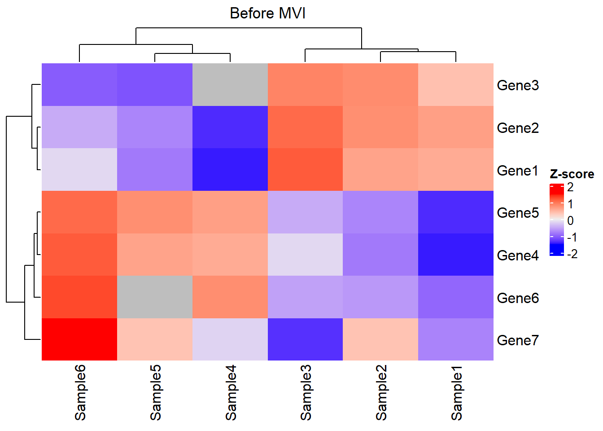
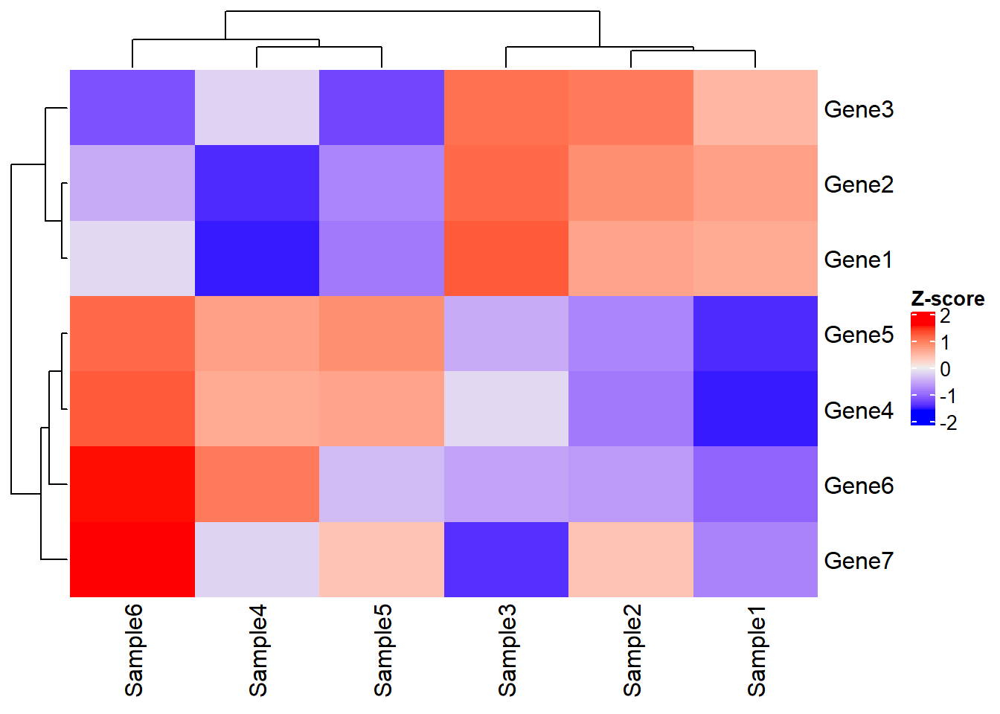
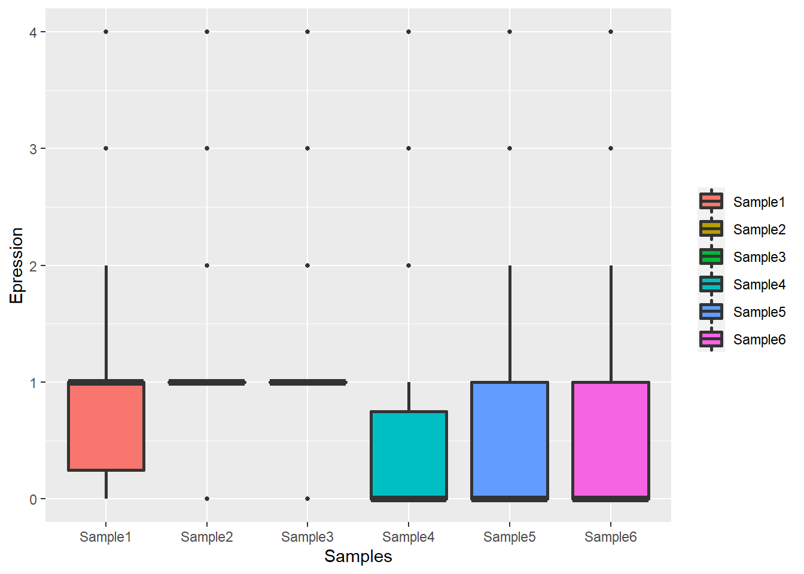

Chapter 1 The Principle of GSClassifier
1.1 Introduction
GSClassifier is an R package for modeling and identification of Gene Expression Profiles (GEPs) subtypes. The detail of GSClassifier package usage had been demonstrated in Github WiKi. Here, we propose to introduce the principle of GSClassifier, including flowchart, top scoring pairs (TSP) algorithm, and batch effect control.
1.2 Flowchart
The flowchart of GSClassifier is showed in Figure 1.1.

Figure 1.1: The flow chart of GSClassifier
1.2.1 Data Processing
For each dataset, RNA expression matrix would be normalized internally (Raw Matrix) so that the expression data of the samples in the dataset were comparable and suitable for subtype identification. As demonstrated in Figure 1.1, the Subtype vector is identified based on independent cohorts instead of a merged matrix with batch effect control technologies. More details about batch effect control are discussed in 2.4.
There is no standard method to figure out subtype vectors. It depends on the Gene Expression Profiles (GEPs) used, the biological problems or ideas of researchers. For Pan-immune Activation and Dysfunction (PAD) subtypes, the GEPs, Pan-Immune Activation Module (PIAM) and Pan-Immune Dysfunction Genes (PIDG), are biologically associated and suitable for calling four sutbypes (PIAMhighPIDGhigh, PIAMhighPIDGlow, PIAMlowPIDGhigh, and PIAMlowPIDGlow). Theoretically, we can also use a category strategy like low/medium/high, but more evidences or motivations are lacked for chasing such a complex model.
With subtype vectors and raw matrices, Top Scoring Pairs (TSP), the core data format for model training and application in GSClassifier, would be calculated for the following process. The details of TSP are summarized in 1.3.
1.2.2 Model Establishment and Validation
The TSP matrix would be devided into training cohort and internal validation cohort. In PAD project, the rate of samples (training vs. test) is 7:3. Next, each Subset (70% of the training cohort in PAD project) would be further selected randomly to build a Submodel via cross-validation Extreme Gradient Boosting algorithm (xgboost::xgb.cv function) [1]. The number of submodels is suggested over 20 (more details in 2.5).
The internal validation cohort and external validation cohort (if any) would be used to test the performace of the trained model. By the way, the data of both internal and external validation cohort would not be used during model training so as to avoid over-fitting.
1.2.3 Model Application
In PAD project, Model for individual, the ensemble of submodels, is called “PAD for individual” (PADi). Supposed raw RNA expression of a sample was given. As showed in 1.1 and 1.2, GSClassifier would turn raw RNA expression into a TSP vector, which would be as a input to Model for individual. Then, GSClassifier would output the possibility matrix and the subtype for this sample. No extra data (RNA expression of others, follow-up data, etc) would be needed but RNA expression of the patient for subtype identification, so we suggest Model for individual (PADi, etc) as personalized model.
1.3 Top scoring pairs
1.3.1 Introduction
Genes expression of an individual is normalized during the model training and the subtype identification via Top Scoring Pairs (TSP, also called Relative Expression Orderings (REOs)) algorithm, which was previously described by Geman et al [2]. TSP normalization for an individual depends on its transcript data, implying that subtype calling would not be perturbed by data from other individuals or other extra information like follow-up data. TSP had been used in cancer research and effectively predicts cancer progression and ICIs response [3–5].
As show in Figure 1.2, The TSP matrix in GSClassifier consists of three parts: binned expression, pair difference, and set difference. In this section, we would conduct some experiments to demonstrate the potential of TSP normalization for development of cross-dataset/platform GEP-based models.
Figure 1.2: The components of TSP (2 gene sets)
1.3.2 Packages
First, load needed packages:
# Install "devtools" package
if (!requireNamespace("devtools", quietly = TRUE))
install.packages("devtools")
# Install dependencies
if (!requireNamespace("luckyBase", quietly = TRUE))
devtools::install_github("huangwb8/luckyBase")
# Install the "GSClassifier" package
if (!requireNamespace("GSClassifier", quietly = TRUE))
devtools::install_github("huangwb8/GSClassifier")
# Install the "pacman" package
if (!requireNamespace("pacman", quietly = TRUE)){
install.packages("pacman")
library(pacman)
} else {
library(pacman)
}
# Load needed packages
packages_needed <- c(
"readxl",
"ComplexHeatmap",
"GSClassifier",
"rpart",
"tidyr",
"reshape2",
"ggplot2")
for(i in packages_needed){p_load(char=i)}Here is the environment of R programming:
# R version 4.0.3 (2020-10-10)
# Platform: x86_64-w64-mingw32/x64 (64-bit)
# Running under: Windows 10 x64 (build 18363)
#
# Matrix products: default
#
# locale:
# [1] LC_COLLATE=Chinese (Simplified)_China.936
# [2] LC_CTYPE=Chinese (Simplified)_China.936
# [3] LC_MONETARY=Chinese (Simplified)_China.936
# [4] LC_NUMERIC=C
# [5] LC_TIME=Chinese (Simplified)_China.936
#
# attached base packages:
# [1] grid stats graphics grDevices utils datasets methods
# [8] base
#
# other attached packages:
# [1] ggplot2_3.3.6 reshape2_1.4.4 tidyr_1.2.0
# [4] rpart_4.1.16 GSClassifier_0.1.22 luckyBase_0.1.0
# [7] ComplexHeatmap_2.4.3 readxl_1.4.0 pacman_0.5.1
#
# loaded via a namespace (and not attached):
# [1] colorspace_2.0-3 ggsignif_0.6.3 rjson_0.2.21
# [4] ellipsis_0.3.2 class_7.3-20 rprojroot_2.0.3
# [7] circlize_0.4.15 GlobalOptions_0.1.2 fs_1.5.2
# [10] clue_0.3-57 rstudioapi_0.13 listenv_0.8.0
# [13] ggpubr_0.4.0 remotes_2.4.2 lubridate_1.8.0
# [16] prodlim_2019.11.13 fansi_1.0.3 codetools_0.2-18
# [19] splines_4.0.3 doParallel_1.0.17 cachem_1.0.6
# [22] knitr_1.30 pkgload_1.2.4 jsonlite_1.8.0
# [25] pROC_1.18.0 caret_6.0-92 broom_1.0.0
# [28] cluster_2.1.3 png_0.1-7 compiler_4.0.3
# [31] backports_1.4.1 assertthat_0.2.1 Matrix_1.2-18
# [34] fastmap_1.1.0 cli_3.3.0 htmltools_0.5.2
# [37] prettyunits_1.1.1 tools_4.0.3 gtable_0.3.0
# [40] glue_1.6.2 dplyr_1.0.9 Rcpp_1.0.8.3
# [43] carData_3.0-5 cellranger_1.1.0 jquerylib_0.1.4
# [46] vctrs_0.4.1 nlme_3.1-149 iterators_1.0.14
# [49] timeDate_3043.102 xfun_0.33 gower_1.0.0
# [52] stringr_1.4.0 globals_0.15.1 ps_1.4.0
# [55] testthat_3.1.0 lifecycle_1.0.1 devtools_2.4.3
# [58] rstatix_0.7.0 future_1.26.1 MASS_7.3-53
# [61] scales_1.2.0 ipred_0.9-12 parallel_4.0.3
# [64] RColorBrewer_1.1-3 yaml_2.3.5 memoise_2.0.1
# [67] sass_0.4.1 stringi_1.7.6 highr_0.9
# [70] desc_1.4.1 randomForest_4.6-14 foreach_1.5.2
# [73] hardhat_1.1.0 pkgbuild_1.3.1 lava_1.6.10
# [76] shape_1.4.6 tuneR_1.4.0 rlang_1.0.2
# [79] pkgconfig_2.0.3 evaluate_0.15 lattice_0.20-41
# [82] purrr_0.3.4 recipes_0.2.0 processx_3.7.0
# [85] tidyselect_1.1.2 parallelly_1.32.0 plyr_1.8.7
# [88] magrittr_2.0.3 bookdown_0.21 R6_2.5.1
# [91] generics_0.1.2 DBI_1.1.3 pillar_1.7.0
# [94] withr_2.5.0 survival_3.3-1 abind_1.4-5
# [97] nnet_7.3-17 tibble_3.1.7 future.apply_1.9.0
# [100] crayon_1.5.1 car_3.1-0 xgboost_1.6.0.1
# [103] utf8_1.2.2 rmarkdown_2.14 GetoptLong_1.0.5
# [106] usethis_2.1.3 data.table_1.14.2 callr_3.7.0
# [109] ModelMetrics_1.2.2.2 digest_0.6.29 stats4_4.0.3
# [112] signal_0.7-7 munsell_0.5.0 bslib_0.3.1
# [115] sessioninfo_1.2.21.3.3 Simulated Dataset
We simulated a dataset to demonstrate the principle of TSP normalization in GSClassifier:
# Geneset
geneSet <- list(
Set1 = paste('Gene',1:3,sep = ''),
Set2 = paste('Gene',4:6,sep = '')
)
# RNA expression
x <- read_xlsx('./data/simulated-data.xlsx', sheet = 'RNA')
expr0 <- as.matrix(x[,-1])
rownames(expr0) <- as.character(as.matrix(x[,1])); rm(x)
# Subtype information
# It depends on the application scenarios of GEPs
subtype_vector <- c(1, 1, 1, 2, 2, 2)
# Binned data for subtype 1
Ybin <- ifelse(subtype_vector == 1, 1, 0)
# Parameters
breakVec = c(0, 0.25, 0.5, 0.75, 1.0)
# Report
cat(c('\n', 'Gene sets:', '\n'))
print(geneSet)
cat('RNA expression:', '\n')
print(expr0)
#
# Gene sets:
# $Set1
# [1] "Gene1" "Gene2" "Gene3"
#
# $Set2
# [1] "Gene4" "Gene5" "Gene6"
#
# RNA expression:
# Sample1 Sample2 Sample3 Sample4 Sample5 Sample6
# Gene1 0.51 0.52 0.60 0.21 0.30 0.40
# Gene2 0.52 0.54 0.58 0.22 0.31 0.35
# Gene3 0.53 0.60 0.61 NA 0.29 0.30
# Gene4 0.21 0.30 0.40 0.51 0.52 0.60
# Gene5 0.22 0.31 0.35 0.52 0.54 0.58
# Gene6 0.23 0.29 0.30 0.53 NA 0.61
# Gene7 0.10 0.12 0.09 0.11 0.12 0.14Look at the matrix via heatmap:
Heatmap(t(scale(t(expr0))), name = "Z-score")
This is an intersting dataset with features as following:
Distinguished gene sets: The expression profile between Gene 1-3 and Gene 4-6 is obviously different arross samples. Thus, these gene sets might represent different biology meaning.
Stable gene: The expression level and rank of Gene 7 seemed to be similar across samples. Thus, Gene 7 might not be a robust marker for subtype modeling. Thus, it could help us to understand how filtering of GSClassifier works.
Expression heterogeneity & rank homogeneity: Take Sample1 and Sample3 as examples. The expression of Gene 1-6 in Sample3 seemed to be higher than those of Sample1. However, the expression of Gene 1-3 is higher than Gene 4-6 in both Sample1 and Sample3, indicating similar bioprocess in these samples exists so that they should be classified as the same subtype.
1.3.4 Missing value imputation (MVI)
Due to reasons like low expression/weak signal, contamination of microarray surfaces, inappropriate manual operations, insufficient resolution or systematic errors during the laboratory process [6–8], missing value in high-imput genetic data is common. Generally, tiny missing value could be just dealed with case deletion, while the biological discovery might be damaged when the missing rate tops 15% [9,10]. Currently, lots of methods, including statistic-based or machine learning-based methods (Figure 1.3), had been developed for missing value imputation (MVI) [10]. Wang et al [11] categorized MVI methods into simple (zeros or average),biology knowledge-, global learning-, local learning-, hybrid-based methods. In order to satisfy the working conditions of xgboost [12] functions (xgb.train, xgboost, and xgb.cv) in GSClassifer, the missing value in expression matrix must be deleted or imputation. In PAD project, several strategies were applied to reduce the impact of missing values as possible.

Figure 1.3: Missing value imputation methods reviewed by Hasan et al.
First, both PIAM and PIDG in PAD project were curated GEPs that were not be missing in over 80% gastric cancer datasets. Here we showed the actual distribution of missing value across samples in gastric cancer datasets we used.
# Data
testData <- readRDS(system.file("extdata", "testData.rds", package = "GSClassifier"))
expr_pad <- testData$PanSTAD_expr_part
# Missing value
expr_pad_na <- apply(expr_pad, 2, function(x) sum(is.na(x))/length(x))
expr_pad_na_df <- data.frame(
sample = names(expr_pad_na),
prob = as.numeric(expr_pad_na),
stringsAsFactors = F
)As shown in Figure 1.4, the percentage of all samples in gastric cancer datasets we used is lower than 8%.
# ggplot
ggplot(data = expr_pad_na_df,
aes(x = sample, y = prob)) +
geom_bar(stat = 'identity', color = mycolor[3]) +
scale_y_continuous(labels=scales::percent) +
labs(x = 'Samples in gastric cancer cohorts',
y = 'Percentage of missing value') +
theme_bw() +
theme(
axis.text.x = element_blank()
)Figure 1.4: The distribution of missing value across gastric cancer samples.
Due to the high quality of our data, we just set missing value as zero during model training and subtype identification in the early version of PADi (PAD.train_v20200110). The model seemed to be robust in both the internal cohort and external cohorts, and greatly predicted the response to immune checkpoint inhibitors (ICIs) in advanced gastric cancer.
In the new version of PADi (PAD.train_v20220917), we designed the so-called quantile algorithm for random MVI during PADi model training, which also seemed to work well for PADi model training. Here, we demonstrated the use of quantile algorithm in the simulated dataset.
# Quantile algorithm
expr <- expr0
na.pos <- apply(expr,2,is.one.na)
set.seed(478); seeds <- sample(1:ncol(expr)*10, sum(na.pos), replace = F)
tSample <- names(na.pos)[na.pos]
quantile_vector <- (1:1000)/1000
for(i in 1:length(tSample)){ # i=1
sample.i <- tSample[i]
expr.i <- expr[, sample.i]
expr.i.max <- max(expr.i, na.rm = T)
expr.i.min <- min(expr.i, na.rm = T)
set.seed(seeds[i]);
expr.i[is.na(expr.i)] <-
expr.i.min +
(expr.i.max-expr.i.min) * sample(quantile_vector,
sum(is.na(expr.i)),
replace = T)
expr[, sample.i] <- expr.i
}
# Report
cat('RNA expression:', '\n')
print(expr0)
cat('\n')
cat('RNA expression without NA value:', '\n')
print(expr)
# RNA expression:
# Sample1 Sample2 Sample3 Sample4 Sample5 Sample6
# Gene1 0.51 0.52 0.60 0.21 0.30 0.40
# Gene2 0.52 0.54 0.58 0.22 0.31 0.35
# Gene3 0.53 0.60 0.61 NA 0.29 0.30
# Gene4 0.21 0.30 0.40 0.51 0.52 0.60
# Gene5 0.22 0.31 0.35 0.52 0.54 0.58
# Gene6 0.23 0.29 0.30 0.53 NA 0.61
# Gene7 0.10 0.12 0.09 0.11 0.12 0.14
#
# RNA expression without NA value:
# Sample1 Sample2 Sample3 Sample4 Sample5 Sample6
# Gene1 0.51 0.52 0.60 0.21000 0.30000 0.40
# Gene2 0.52 0.54 0.58 0.22000 0.31000 0.35
# Gene3 0.53 0.60 0.61 0.43256 0.29000 0.30
# Gene4 0.21 0.30 0.40 0.51000 0.52000 0.60
# Gene5 0.22 0.31 0.35 0.52000 0.54000 0.58
# Gene6 0.23 0.29 0.30 0.53000 0.32622 0.61
# Gene7 0.10 0.12 0.09 0.11000 0.12000 0.14Look at the new matrix via heatmap, where the clustering result is not obviously disturbed after MVI:
Heatmap(t(scale(t(expr))), name = "Z-score")
Next, we explored how the number of missing value impacts subtype identification by PADi. First, we used quantile algorithm to do MVI in the internal validation cohort of gastric cancer. Second, we randomly masked different proportion of genes as zero expression. Third, we calculated the relative multi-ROC (masked data vs. MVI data). We had developed a function called mv_tolerance in GSClassifier to do this task.
Load the internal validation cohort:
# Internal validation cohort
testData <- readRDS(system.file("extdata", "testData.rds", package = "GSClassifier"))
expr_pad <- testData$PanSTAD_expr_part
modelInfo <- modelData(
design = testData$PanSTAD_phenotype_part,
id.col = "ID",
variable = c("platform", "PAD_subtype"),
Prop = 0.7,
seed = 19871
)
validInform <- modelInfo$Data$Valid
expr_pad_innervalid <- expr_pad[,validInform$ID]Missing value tolerance analysis:
# Time-consuming
mvt <- mv_tolerance(
X = expr_pad_innervalid,
gene.loss = c(2, 4, 6, 8, 10, 12),
levels = c(1, 2, 3, 4),
model = "PAD.train_20220916",
seed = 487,
verbose = T
)Prepare the data of multi-ROC analysis:
# Data
mvt_auc <- mvt$multiAUC
mvt_auc_df <- data.frame()
for(i in 1:length(mvt_auc)){ # i=1
df.i <- data.frame(
x = as.integer(Fastextra(names(mvt_auc)[i], '=', 2)),
y = as.numeric(mvt_auc[[i]]$auc),
stringsAsFactors = F
)
mvt_auc_df <- rbind(mvt_auc_df, df.i)
}
Plot the missing value tolerance:
ggplot(mvt_auc_df, aes(x,y)) +
geom_point() +
scale_x_continuous(breaks = c(2, 4, 6, 8, 10, 12)) +
stat_smooth(formula = y ~ x,method = 'glm') +
labs(x = 'No. of missing value',
y='Relative AUC in multi-ROC analysis')Figure 1.5: The association between the number of missing value and subtype identification performance.
As showed in Figure 1.5, there is linear negative correlation between the number of missing value (mising rate ranges from 6.25% to 37.5%) and subtype identification performance of PADi model. One of the reasons might be that PIAM/PIDG were small gene sets, so little gene loss might significantly impact the performance of PADi. By the way, there is no mising value for PADi in the ‘Kim2018’ cohort, an external validation cohort for ICIs therapy response. Nonetheless, we still used zero strategy during subtype identification of PADi if any missing value exist, because randomization might make the result unstable, which is not suitable for clinical decision.
In conclusion, zero or quantile strategy could be applied for MVI before GSClassifier model training. However, missing value should be avoid as possible in subtype identification for missing value really damage the performance of GSClassifier. Nonetheless, due to low-input gene sets used in PADi model (No. of Gene=32), it’s easy to avoid missing value in clinical practice.
1.3.5 Binned expression
First, we binned genes with diffrent quantile intervals so that the distribution of rank information could be more consistent across samples.
Take Sample4 as an example:
# Data of Sample4
x <- expr[,4]
# Create quantiles
brks <- quantile(as.numeric(x),
probs=breakVec,
na.rm = T)
# Get interval orders
xbin <- .bincode(x = x,
breaks = brks,
include.lowest = T)
xbin <- as.numeric(xbin)
names(xbin) <- names(x)
# Report
cat('Quantiles:', '\n'); print(brks)
cat('\n')
cat('Raw expression:', '\n');print(x)
cat('\n')
cat('Binned expression:', '\n'); print(xbin)
# Quantiles:
# 0% 25% 50% 75% 100%
# 0.11000 0.21500 0.43256 0.51500 0.53000
#
# Raw expression:
# Gene1 Gene2 Gene3 Gene4 Gene5 Gene6 Gene7
# 0.21000 0.22000 0.43256 0.51000 0.52000 0.53000 0.11000
#
# Binned expression:
# Gene1 Gene2 Gene3 Gene4 Gene5 Gene6 Gene7
# 1 2 2 3 4 4 1For example, 0.110 is the minimun of the raw expression vector, so its binned expression is 1. Similarly, the binned expression of maximum 0.530 is 4.
Generally, we calculate binned expression via function breakBin of GSClassifier:
expr_binned <- apply(
expr, 2,
GSClassifier:::breakBin,
breakVec)
rownames(expr_binned) <- rownames(expr)
print(expr_binned)
# Sample1 Sample2 Sample3 Sample4 Sample5 Sample6
# Gene1 3 3 4 1 2 2
# Gene2 4 4 3 2 2 2
# Gene3 4 4 4 2 1 1
# Gene4 1 2 2 3 4 4
# Gene5 2 2 2 4 4 3
# Gene6 2 1 1 4 3 4
# Gene7 1 1 1 1 1 1In this simulated dataset, Gene7 is a gene whose expression is always the lowest across all samples. In other words, the rank of Gene7 is stable or invariable across samples so that it’s not robust for identification of differentail subtypes.
Except binned expression, we also calculated pair difference later. Due to the number of gene pair is \(C_{2 \atop n}\), the removement of genes like Gene7 before modeling could really reduce the complexibility and save computing resources. In all, genes with low rank difference should be dropped out in some extent in GSClassifier.
First, We use base::rank to return the sample ranks of the values in a vector:
expr_binned_rank <- apply(
expr_binned, 2,
function(x)rank(x, na.last = TRUE)
)
print(expr_binned_rank)
# Sample1 Sample2 Sample3 Sample4 Sample5 Sample6
# Gene1 5.0 5.0 6.5 1.5 3.5 3.5
# Gene2 6.5 6.5 5.0 3.5 3.5 3.5
# Gene3 6.5 6.5 6.5 3.5 1.5 1.5
# Gene4 1.5 3.5 3.5 5.0 6.5 6.5
# Gene5 3.5 3.5 3.5 6.5 6.5 5.0
# Gene6 3.5 1.5 1.5 6.5 5.0 6.5
# Gene7 1.5 1.5 1.5 1.5 1.5 1.5Then, get weighted average rank difference of each gene based on specified subtype distribution (Ybin):
testRes <- sapply(
1:nrow(expr_binned_rank),
function(gi){
# Rank vector of each gene
rankg = expr_binned_rank[gi,];
# Weighted average rank difference of a gene for specified subtype
# Here is subtype 1 vs. others
(sum(rankg[Ybin == 0], na.rm = T) / sum(Ybin == 0, na.rm = T)) -
(sum(rankg[Ybin == 1], na.rm = T) / sum(Ybin == 1, na.rm = T))
}
)
names(testRes) <- rownames(expr_binned_rank)
print(testRes)
# Gene1 Gene2 Gene3 Gene4 Gene5 Gene6 Gene7
# -2.666667 -2.500000 -4.333333 3.166667 2.500000 3.833333 0.000000Gene7 is the one with the lowest absolute value (0) of rank diffrence. By the way, Gene 1-3 have the same direction (<0), so do Gene 4-6 (>0), which indicates the nature of clustering based on these two gene sets.
In practice, we use ptail to select differential genes based on rank diffrences. Smaller ptail is, less gene kept. Here, we just set ptail=0.4:
# ptail is a numeber ranging (0,0.5].
ptail = 0.4
# Index of target genes with big rank differences
idx <- which((testRes < quantile(testRes, ptail, na.rm = T)) |
(testRes > quantile(testRes, 1.0-ptail, na.rm = T)))
# Target genes
gene_bigRank <- names(testRes)[idx]
# Report
cat('Index of target genes: ','\n');print(idx); cat('\n')
cat('Target genes:','\n');print(gene_bigRank)
# Index of target genes:
# Gene1 Gene2 Gene3 Gene4 Gene5 Gene6
# 1 2 3 4 5 6
#
# Target genes:
# [1] "Gene1" "Gene2" "Gene3" "Gene4" "Gene5" "Gene6"Hence, Gene7 was filtered and excluded in the following analysis. By the way, both ptail and breakVec are hyperparameters in GSClassifier modeling.
1.3.6 Pair difference
In GSClassifier, we use a ensemble function featureSelection to select data for pair difference scoring.
expr_feat <- featureSelection(expr, Ybin,
testRes = testRes,
ptail = 0.4)
expr_sub <- expr_feat$Xsub
gene_bigRank <- expr_feat$Genes
# Report
cat('Raw xpression without NA:', '\n')
print(expr_sub)
cat('\n')
cat('Genes with large rank diff:', '\n')
print(gene_bigRank)
# Raw xpression without NA:
# Sample1 Sample2 Sample3 Sample4 Sample5 Sample6
# Gene1 0.51 0.52 0.60 0.21000 0.30000 0.40
# Gene2 0.52 0.54 0.58 0.22000 0.31000 0.35
# Gene3 0.53 0.60 0.61 0.43256 0.29000 0.30
# Gene4 0.21 0.30 0.40 0.51000 0.52000 0.60
# Gene5 0.22 0.31 0.35 0.52000 0.54000 0.58
# Gene6 0.23 0.29 0.30 0.53000 0.32622 0.61
#
# Genes with large rank diff:
# [1] "Gene1" "Gene2" "Gene3" "Gene4" "Gene5" "Gene6"In GSClassifier, we use function makeGenePairs to calculate s
gene_bigRank_pairs <- GSClassifier:::makeGenePairs(
gene_bigRank,
expr[gene_bigRank,])
print(gene_bigRank_pairs)
# Sample1 Sample2 Sample3 Sample4 Sample5 Sample6
# Gene1:Gene2 0 0 1 0 0 1
# Gene1:Gene3 0 0 0 0 1 1
# Gene1:Gene4 1 1 1 0 0 0
# Gene1:Gene5 1 1 1 0 0 0
# Gene1:Gene6 1 1 1 0 0 0
# Gene2:Gene3 0 0 0 0 1 1
# Gene2:Gene4 1 1 1 0 0 0
# Gene2:Gene5 1 1 1 0 0 0
# Gene2:Gene6 1 1 1 0 0 0
# Gene3:Gene4 1 1 1 0 0 0
# Gene3:Gene5 1 1 1 0 0 0
# Gene3:Gene6 1 1 1 0 0 0
# Gene4:Gene5 0 0 1 0 0 1
# Gene4:Gene6 0 1 1 0 1 0
# Gene5:Gene6 0 1 1 0 1 0Take Gene1:Gene4 of Sample1 as an example. \(Expression_{Gene1} - Expression_{Gene4} = 0.51-0.21 = 0.3 > 0\), so the pair score is 1. If the difference is less than or equal to 0, the pair score is 0. In addition, the difference of gene pair scoring between Sample 1-3 and Sample 4-6 is obivous, revealing the robustness of pair difference for subtype identification.
1.3.7 Set difference
In GSClassifier, Set difference is defined as a weight average of gene-geneset rank difference.
# No. of gene sets
nGS = 2
# Name of gene set comparision, which is like s1s2, s1s3 and so on.
featureNames <- 's1s2'
# Gene set difference across samples
resultList <- list()
for (i in 1:ncol(expr_sub)) { # i=1
res0 <- numeric(length=length(featureNames))
idx <- 1
for (j1 in 1:(nGS-1)) { # j1=1
for (j2 in (j1+1):nGS) { # j2=2
# If j1=1 and j2=2, gene sets s1/s2 would be selected
# Genes of different gene sets
set1 <- geneSet[[j1]] # "Gene1" "Gene2" "Gene3"
set2 <- geneSet[[j2]] # "Gene4" "Gene5" "Gene6"
# RNA expression of Genes by different gene sets
vals1 <- expr_sub[rownames(expr_sub) %in% set1,i]
# Gene1 Gene2 Gene3
# 0.51 0.52 0.53
vals2 <- expr_sub[rownames(expr_sub) %in% set2,i]
# Gene4 Gene5 Gene6
# 0.21 0.22 0.23
# Differences between one gene and gene sets
# Compare expression of each gene in Set1 with all genes in Set2.
# For example, 0.51>0.21/0.22/0.23, so the value of Gene1:s2 is 3.
res1 <- sapply(vals1, function(v1) sum(v1 > vals2, na.rm=T))
# Gene1:s2 Gene2:s2 Gene3:s2
# 3 3 3
# Weight average of gene-geneset rank difference
res0[idx] <- sum(res1, na.rm = T) / (length(vals1) * length(vals2))
# Next gene set pair
idx <- idx + 1
}
}
resultList[[i]] <- as.numeric(res0)
}
resMat <- do.call(cbind, resultList)
colnames(resMat) <- colnames(expr_sub)
rownames(resMat) <- featureNames
# Report
cat('Set difference across samples: ', '\n')
print(resMat)
# Set difference across samples:
# Sample1 Sample2 Sample3 Sample4 Sample5 Sample6
# s1s2 1 1 1 0 0 0In GSClassifier, we established makeSetData to evaluate set difference across samples:
# Gene set difference across samples
geneset_interaction <- GSClassifier:::makeSetData(expr_sub, geneSet)
# Report
cat('Set difference across samples: ', '\n')
print(resMat)
# Set difference across samples:
# Sample1 Sample2 Sample3 Sample4 Sample5 Sample6
# s1s2 1 1 1 0 0 0We have known that the subtype of Sample 1-3 differs from that of Sample 4-6, which revealed the robustness of set difference for subtype indentification.
Based on the structure of TSP in Figure 1.2, TSP matrix of the simulated dataset should be :
# TSP matrix
tsp <- rbind(
# Binned expression
expr_binned[gene_bigRank,],
# Pair difference
gene_bigRank_pairs,
# Set difference
resMat
)
# Report
cat('TSP matrix: ', '\n')
print(tsp)
# TSP matrix:
# Sample1 Sample2 Sample3 Sample4 Sample5 Sample6
# Gene1 3 3 4 1 2 2
# Gene2 4 4 3 2 2 2
# Gene3 4 4 4 2 1 1
# Gene4 1 2 2 3 4 4
# Gene5 2 2 2 4 4 3
# Gene6 2 1 1 4 3 4
# Gene1:Gene2 0 0 1 0 0 1
# Gene1:Gene3 0 0 0 0 1 1
# Gene1:Gene4 1 1 1 0 0 0
# Gene1:Gene5 1 1 1 0 0 0
# Gene1:Gene6 1 1 1 0 0 0
# Gene2:Gene3 0 0 0 0 1 1
# Gene2:Gene4 1 1 1 0 0 0
# Gene2:Gene5 1 1 1 0 0 0
# Gene2:Gene6 1 1 1 0 0 0
# Gene3:Gene4 1 1 1 0 0 0
# Gene3:Gene5 1 1 1 0 0 0
# Gene3:Gene6 1 1 1 0 0 0
# Gene4:Gene5 0 0 1 0 0 1
# Gene4:Gene6 0 1 1 0 1 0
# Gene5:Gene6 0 1 1 0 1 0
# s1s2 1 1 1 0 0 0Have a look at the distribution:
# Data
tsp_df <- reshape2::melt(tsp)
ggplot(tsp_df,aes(x=Var2,y=value,fill=Var2)) +
geom_boxplot(outlier.size = 1, size = 1) +
labs(x = 'Samples',
y = 'Epression',
fill = NULL) 
1.3.8 Batch effect
TSP was widely applied to control batch effects in transciptomic data [13–20]. Still, we tested whether TSP is a robust method for batch effect control in real-world data. As demonstrated in Figure 1.6, the obvious batch effects across gastric cancer datsets were significantly reduced after TSP normalization.
Figure 1.6: Batch effects across gastric cancer cohorts. All gene pairs were used because subtype vectors were not specified. Top: Raw expression of all genes across samples. Middle: Raw expression of PIAM and PIDG across samples. Bottom: TSP of PIAM and PIDG across samples.
In order to confirmed the association between gene counts in modeling and batch effect control via TSP normalization, we selected random genes with counts ranging 4, 8, 20, 40, and 80 for TSP matrix establishment. As shown in Figure 1.7, TSP normalization works greatly in different gene counts for batch effect control compared with raw expression matrix.

Figure 1.7: Batch effects of random genes across gastric cancer cohorts. All gene pairs were used because subtype vectors were not specified. Gene counts 4, 8, 20, 40, and 80 were detected. Data of set difference were not available because only one gene set were applied.